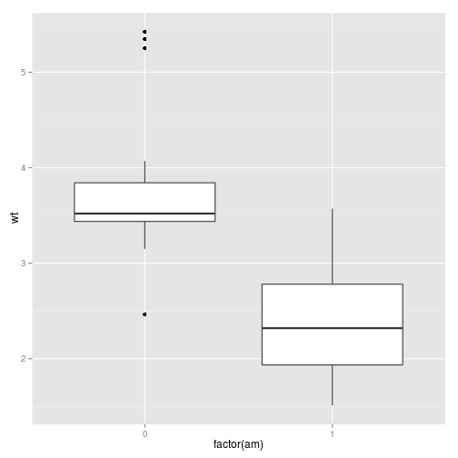
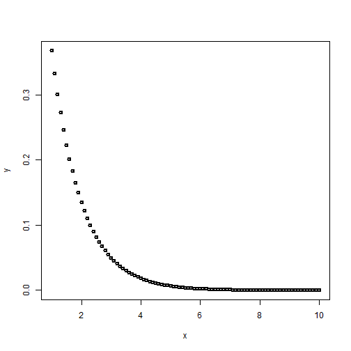
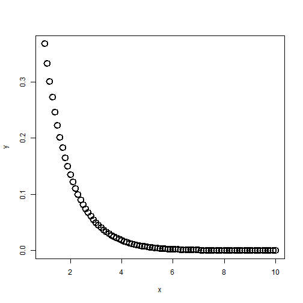

-
Aula 02 - Estruturas de Dados e Vocabulário
2015-01-21
SourceEstruturas de dados no R
Tipos básicos de estrutura no R:
- Atomic vector: homogêneo e unidimensional
- Matriz: homogêneo e bidimensional
- Array: homogêneo e multidimensional
- Lista: heterogêneo e unidimensional
- Data frame: heterogêneo bidimensional
Nota: em sua implementação, atomic vectors e matrizes são também arrays e data frames são listas.
Atomic Vectors
Atomic vectors são a estrutura de objetos mais simples do R, caracterizados por "não terem dimensão".
Tipos de atomic vectos:
- lógico
- integer
- double
- complexo
- character
Exemplos:
dbl_var <- c(1, 2.5, 4.5) #DOUBLE # Com o sufixo L temos números inteiros em vez de double int_var <- c(1L, 6L, 10L) # Use TRUE ou FALSE (T ou F) para vetores lógicos log_var <- c(TRUE, FALSE, T, F) chr_var <- c("essas são", "algumas strings")Curiosidade: na função
c(), o c é de concatenate.Para saber qual é o tipo de um objeto, utilizamos a função
typeof().typeof(dbl_var)## [1] "double"typeof(int_var)## [1] "integer"typeof(log_var)## [1] "logical"typeof(chr_var)## [1] "character"As funções
is.integer(),is.double(),is.logical(),is.character()são usadas para testar se um objeto é de um determinado tipo.is.integer(dbl_var)## [1] FALSEis.double(dbl_var)## [1] TRUEis.numeric(dbl_var)## [1] TRUEis.logical(log_var)## [1] TRUEis.character(chr_var)## [1] TRUENote que a função
is.numeric()retornaTRUEtanto para objetos double quanto para integer.Coerção
Quando dois tipos de objetos são inseridos uma estrutura homogênea (atomic vectors, arrays ou matrizes), o R converte converterá o objeto para o tipo mais flexível, na ordem:
- logical
- integer
- double
- character
Na lista acima, character é o tipo mais flexível.
c("a", 1)## [1] "a" "1"c(T, 1)## [1] 1 1Isso pode ser útil, por exemplo, para contar o número de TRUEs em um vetor lógico:
sum(c(T, F, T, F, T))## [1] 3Factors
Factors são utilizados para armazernar dados categorizados e são caracterizados por:
- conterem apenas valores pré-definidos, chamados levels; e
- se basearem num vetor de inteiros.
f <- factor(c("aventura", "terror", "comédia", "drama")) f## [1] aventura terror comédia drama ## Levels: aventura comédia drama terrorlevels(f)## [1] "aventura" "comédia" "drama" "terror"Observe que, dentro do objeto, os levels são organizados em ordem alfabética.
Sempre tome cuidado ao converter factors em objetos numéricos:
f <- factor(c("2", "3", "1", "10")) as.numeric(f) # não funciona## [1] 3 4 1 2as.numeric(as.character(f)) # funciona## [1] 2 3 1 10Matrizes e Arrays
Matrizes e arrays são definidos usando as funções
matrix()earray().# Um vetor para descrever todas as dimensões arr <- array(1:12, c(3,2,2)) # Dois argumentos para determinar o número de linahs e colunas mat <- matrix(1:6, ncol = 3, nrow = 2)Diferentemente dos atomic vectors, essas estruturas apresentam o atribuito dimensão.
Nota: observe que uma matriz é um array com duas dimensões.
As funções
length(),dim(),nrow(),ncol()são usadas para determinar o comprimento de cada dimensão de um objeto.dim(c(1,2,3))## NULLnrow(c(1,2,3))## NULLncol(c(1,2,3))## NULLlength(c(1,2,3))## [1] 3dim(arr)## [1] 3 2 2length(arr)## [1] 12nrow(arr)## [1] 3ncol(arr)## [1] 2dim(mat)## [1] 2 3length(mat)## [1] 6nrow(mat)## [1] 2ncol(mat)## [1] 3Listas e Data frames
Listas são definidas usando a função
list().list( c(1:5), c("homem", "mulher"), c(T, F, T), list(c(1,2,3), c("a", "b", "c")) )## [[1]] ## [1] 1 2 3 4 5 ## ## [[2]] ## [1] "homem" "mulher" ## ## [[3]] ## [1] TRUE FALSE TRUE ## ## [[4]] ## [[4]][[1]] ## [1] 1 2 3 ## ## [[4]][[2]] ## [1] "a" "b" "c"Data frames são listas em que todos os elementos têm o mesmo comprimento. São definidos usando a função
data.frame().df <- data.frame(x = 1:4, y = c("oi", "oi", "oi", "oi"), z = T) df## x y z ## 1 1 oi TRUE ## 2 2 oi TRUE ## 3 3 oi TRUE ## 4 4 oi TRUEstr(df)## 'data.frame': 4 obs. of 3 variables: ## $ x: int 1 2 3 4 ## $ y: Factor w/ 1 level "oi": 1 1 1 1 ## $ z: logi TRUE TRUE TRUE TRUEEm um data frame converte, os caracteres são convertidos em factors. Se essa conversão é indesejável, use o argumento
stringAsFactors = Fdf <- data.frame(x = 1:4, y = c("oi", "oi", "oi", "oi"), z = T, stringsAsFactors = F) str(df)## 'data.frame': 4 obs. of 3 variables: ## $ x: int 1 2 3 4 ## $ y: chr "oi" "oi" "oi" "oi" ## $ z: logi TRUE TRUE TRUE TRUESe usarmos a função
names()obtemos o nome das colunas do data frame. Também é possível mudar o nome das colunas:names(df)## [1] "x" "y" "z"names(df) <- c("a", "b", "c") names(df)## [1] "a" "b" "c"Combinando data frames
É possível combinar data frames usando as funções
rbind()ecbind():df1 <- data.frame(x = 1:4, y = c("s", "s", "s", "s"), z = T) df2 <- data.frame(x = 1:2, y = c("n", "n"), z = F) rbind(df1, df2)## x y z ## 1 1 s TRUE ## 2 2 s TRUE ## 3 3 s TRUE ## 4 4 s TRUE ## 5 1 n FALSE ## 6 2 n FALSEcbind(df1, df2)## x y z x y z ## 1 1 s TRUE 1 n FALSE ## 2 2 s TRUE 2 n FALSE ## 3 3 s TRUE 1 n FALSE ## 4 4 s TRUE 2 n FALSESubsetting no R
Chamamos de subsetting a seleção de um subconjunto de um objeto. No R, existem três tipos principais de operação de subsetting:
a) Números inteiros positivos:
Retorna os elementos do vetor associados aos índices especificados.
x <- c(13, 8, 5, 3, 2, 1, 1) x[c(1,2,3)] # seleciona os três primeiros elementos do vetor## [1] 13 8 5order(x) # devolve a ordem dos elementos do vetor## [1] 6 7 5 4 3 2 1x[order(x)] # seleciona os elementos do vetor em ordem crescente## [1] 1 1 2 3 5 8 13b) Números inteiros negativos.
Exclui o elemento do vetor pelo índice selecionado.
x[-c(2, 5,6)]## [1] 13 5 3 1c) Vetores lógicos.
TRUE seleciona, FALSE não seleciona.
x == 1## [1] FALSE FALSE FALSE FALSE FALSE TRUE TRUEx[x==1]## [1] 1 1x > 5## [1] TRUE TRUE FALSE FALSE FALSE FALSE FALSEx[x>5]## [1] 13 8Existem outros tipos de subsetting pouco (ou nada) utilizados:
x[] # retorna o próprio objeto## [1] 13 8 5 3 2 1 1x[0] # retorna um objeto de tamanho 0## numeric(0)Quando o objeto tem mais de uma dimensão, utilizamos a "," para selecionar valores dentro de cada dimensão.
m <- matrix(c(1:5, 11:15), nrow=5, ncol=2) m## [,1] [,2] ## [1,] 1 11 ## [2,] 2 12 ## [3,] 3 13 ## [4,] 4 14 ## [5,] 5 15m[5,2] # Retorna o elemento especificado pelos índices.## [1] 15m[,1] # Retorna todos os elementos da coluna 1.## [1] 1 2 3 4 5m[3,] # Retorna todos os elementos da linha 3.## [1] 3 13m[m%%2 == 0] # Retorna os elementos pares.## [1] 2 4 12 14O operador pipe - %>%
O operador pipe foi uma das grandes revoluções do R que aconteceram recentemente. Ele torna a leitura de códigos R muito mais fácil e compreensível.
O que é?
library(magrittr)## ## Attaching package: 'magrittr' ## ## The following object is masked from 'package:tidyr': ## ## extractx <- c(1,2,3,4) x %>% sum## [1] 10sum(x)## [1] 10O operador
%>%usa o resultado do seu lado esquerdo como primeiro argumento da função do lado direito. Simplesmente.Por que isso é útil?
Imagine que você precisa escrever a receita de um bolo usando o R, e cada passo da receita é uma função
esfrie(asse(coloque(bata(acrescente(bowl(rep("farinha", 2), "água", "fermento", "leite", "óleo"), "farinha", até = "macio"), duração = "3min"), lugar = "forma", tipo = "grande", untada = T), duração = "50min"), "geladeira", "20min")Tente entender o que é preciso fazer... Não é muito fácil né? E escrevendo usando o operador
%>%?bowl(rep("farinha", 2), "água", "fermento", "leite", "óleo") %>% acrescente("farinho", até = "macio") %>% bata(duração = "3min") %>% coloque(lugar = "forma", tipo = "grande", untada = T) %>% asse(duração = "50min") %>% esfrie("geladeira", "20min")## Error in eval(expr, envir, enclos): could not find function "bowl"A compreensão é imediatamente muito mais fácil. Agora o código realmente se parece com uma receita de bolo.
Outros exemplos
Se você não quiser substituir o primeiro argumento, mas algum outro:
T %>% mean(c(NA, rnorm(100)), na.rm = .) # o ponto é substituido pelo lado esquerdo## [1] -0.1577354F %>% mean(c(NA, rnorm(100)), na.rm = .)## [1] NAEste operador foi introduzido pelo pacote
magrittre já existem diversos pacotes construidos para facilitar a sua utilização, entre eles odplyrdo qual se trata a próxima aula.Gráficos com a função plot()
ESCREVER INTRO
x <- seq(1, 10, 0.1) y <- exp(-x) plot(x, y)
Observe que o gráfico gerado mapeia cada valor (x,y) como um ponto no plano cartesiano. Para mudar a forma de visualização, utilizamos o argumento
type=. Aqui estão os principais tipos de visualização disponíveis:- "p" para pontos (default)
- "l" para retas
- "b" para ambos (pontos e retas)
- "h" para retas verticais
- "s" para escadas
- "n" para não plotar
plot(x, y, type = "l")
plot(x, y, type = "b")
plot(x, y, type = "h")
plot(x, y, type = "s")
plot(x, y, type = "n")
Para alterar a espessura das visualizações, utilizamos o argumento
lwd=:plot(x, y, type = "p", lwd = 2)
plot(x, y, type = "h", lwd = 3)
Observe que esse argumento altera apenas a espessura da circunferência do ponto. Para alterar o tamanho do ponto, utilizamos o argumento
cex=:plot(x, y, type = "p", lwd = 2, cex = 2)
Para alterar a cor do gráfico, utilizamos o argumento
col=:plot(x, y, type = "h", lwd = 3, col = "red")
plot(x, y, type = "h", lwd = 3, col = "#9ff115")
O pacote
graphicstambém traz funções para outros tipos de gráficos mais específicos:hist()- para histogramaspie()- para gráficos de pizzaboxplot()- para boxplots